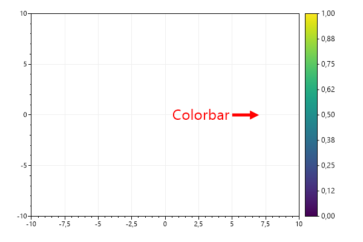
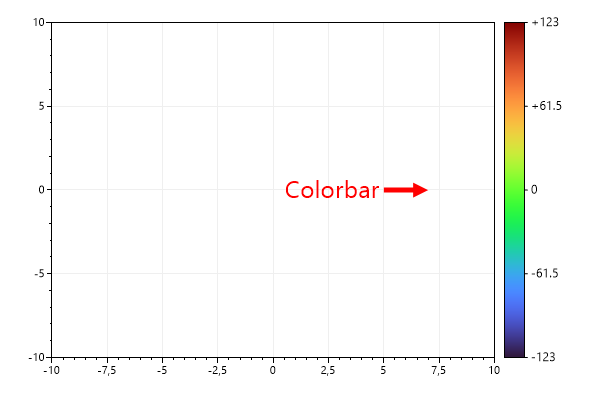
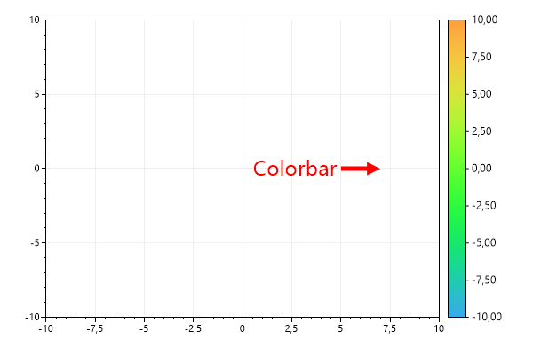
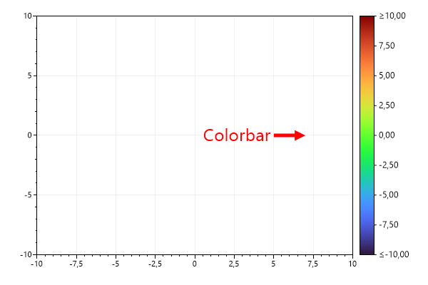
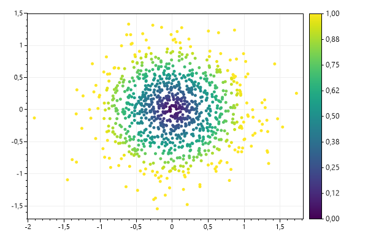
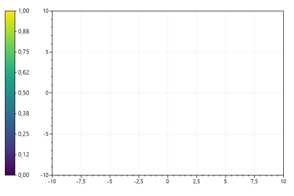

This page contains recipes for the Colorbar category.
Visit the Cookbook Home Page to view all cookbook recipes.
Visit the Cookbook Home Page to view all cookbook recipes.
Colorbar
A colorbar displays a colormap beside the data area. Colorbars are typically added to plots containing heatmaps.
var plt = new ScottPlot.Plot(600, 400);
plt.AddColorbar();
// direct attention to the colorbar
var text = plt.AddText("Colorbar", 5, 0, 24, Color.Red);
text.Alignment = Alignment.MiddleRight;
plt.AddArrow(7, 0, 5, 0, color: Color.Red);
plt.SetAxisLimits(-10, 10, -10, 10);
plt.SaveFig("colorbar_quickstart.png");

Colorbar for Colormap
By default colorbars use the Viridis colormap, but this behavior can be customized and many colormaps are available.
var plt = new ScottPlot.Plot(600, 400);
plt.AddColorbar(Drawing.Colormap.Turbo);
// direct attention to the colorbar
var text = plt.AddText("Colorbar", 5, 0, 24, Color.Red);
text.Alignment = Alignment.MiddleRight;
plt.AddArrow(7, 0, 5, 0, color: Color.Red);
plt.SetAxisLimits(-10, 10, -10, 10);
plt.SaveFig("colorbar_colormap.png");
Colorbar Ticks
Tick marks can be added to colorbars. Each tick is described by a position (a fraction of the distance from the bottom to the top) and a string (the tick label).
var plt = new ScottPlot.Plot(600, 400);
var cb = plt.AddColorbar(Drawing.Colormap.Turbo);
// Add manual ticks (disabling automatic ticks)
cb.AddTick(0, "-123");
cb.AddTick(1, "+123");
cb.AddTick(.5, "0");
cb.AddTick(.25, "-61.5");
cb.AddTick(.75, "+61.5");
// To re-enable automatic ticks call cb.AutomaticTicks(true)
// direct attention to the colorbar
var text = plt.AddText("Colorbar", 5, 0, 24, Color.Red);
text.Alignment = Alignment.MiddleRight;
plt.AddArrow(7, 0, 5, 0, color: Color.Red);
plt.SetAxisLimits(-10, 10, -10, 10);
plt.SaveFig("colorbar_ticks.png");

Color Range
You can restrict a colorbar to only show a small range of a colormap. In this example we only use the middle of a rainbow colormap.
var plt = new ScottPlot.Plot(600, 400);
var cb = plt.AddColorbar(Drawing.Colormap.Turbo);
cb.MinValue = -10;
cb.MaxValue = 10;
cb.MinColor = .25;
cb.MaxColor = .75;
// direct attention to the colorbar
var text = plt.AddText("Colorbar", 5, 0, 24, Color.Red);
text.Alignment = Alignment.MiddleRight;
plt.AddArrow(7, 0, 5, 0, color: Color.Red);
plt.SetAxisLimits(-10, 10, -10, 10);
plt.SaveFig("colorbar_Range.png");

Clipped value range
If data values extend beyond the min/max range displayed by a colorbar you can indicate the colormap is clipping the data values and inequality symbols will be displayed in the tick labeles at the edge of the colorbar.
var plt = new ScottPlot.Plot(600, 400);
var cb = plt.AddColorbar(Drawing.Colormap.Turbo);
cb.MinValue = -10;
cb.MaxValue = 10;
cb.MinIsClipped = true;
cb.MaxIsClipped = true;
// direct attention to the colorbar
var text = plt.AddText("Colorbar", 5, 0, 24, Color.Red);
text.Alignment = Alignment.MiddleRight;
plt.AddArrow(7, 0, 5, 0, color: Color.Red);
plt.SetAxisLimits(-10, 10, -10, 10);
plt.SaveFig("colorbar_clip.png");

Scatter Plot with Colorbar
This example shows how to add differently colored markers to the plot to simulate a scatter plot with points colored according to a colorbar. Note that the colormap generates the colors, and that a colorbar just displays a colormap
var plt = new ScottPlot.Plot(600, 400);
var cmap = ScottPlot.Drawing.Colormap.Viridis;
plt.AddColorbar(cmap);
Random rand = new(0);
for (int i = 0; i < 1000; i++)
{
double x = ScottPlot.DataGen.RandomNormalValue(rand, mean: 0, stdDev: .5);
double y = ScottPlot.DataGen.RandomNormalValue(rand, mean: 0, stdDev: .5);
double colorFraction = Math.Sqrt(x * x + y * y);
System.Drawing.Color c = ScottPlot.Drawing.Colormap.Viridis.GetColor(colorFraction);
plt.AddPoint(x, y, c);
}
plt.SaveFig("colorbar_scatter.png");

Colorbar on Left
A colorbar may be added to the left side of the chart
var plt = new ScottPlot.Plot(600, 400);
plt.AddColorbar(rightSide: false);
plt.SaveFig("colorbar_left.png");
